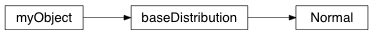

Normal distribution¶
@NormalDistribution Module defining a normal distribution with statistical procedures
-
class
geobipy.src.classes.statistics.NormalDistribution.Normal(mean, variance, prng=None)¶ Univariate normal distribution
Normal(mean, variance)
Parameters: - mean (numpy.float) – The mean of the distribution
- variance (numpy.float) – The variance of the distribution
-
deepcopy()¶ Create a deepcopy
Returns: Normal Return type: out
-
getBins(size=100)¶ Discretizes a range given the mean and variance of the distribution
-
probability(x)¶ For a realization x, compute the probability
-
rng(size=1)¶ Generate random numbers
Parameters: N (int or sequence of ints) – Number of samples to generate Returns: numpy.ndarray Return type: out